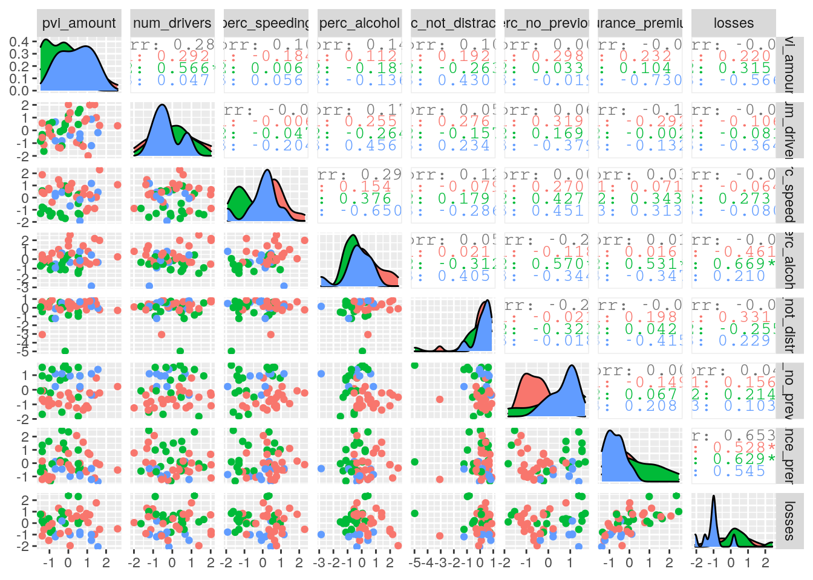

bad_drivers <- read.csv("bad_drivers.csv")
partisan_lean <- read.csv("partisan_lean.csv")
bad_drivers <- bad_drivers
partisan_lean <- partisan_lean
library(tidyverse)## ── Attaching packages ───────────────────────────────────────────────────────────────────────────────────────────────────────────────────── tidyverse 1.3.0 ──## ✓ ggplot2 3.3.2 ✓ purrr 0.3.4
## ✓ tibble 3.0.3 ✓ dplyr 1.0.1
## ✓ tidyr 1.1.1 ✓ stringr 1.4.0
## ✓ readr 1.3.1 ✓ forcats 0.5.0## ── Conflicts ──────────────────────────────────────────────────────────────────────────────────────────────────────────────────────── tidyverse_conflicts() ──
## x dplyr::filter() masks stats::filter()
## x dplyr::lag() masks stats::lag()library(plotly)##
## Attaching package: 'plotly'## The following object is masked from 'package:ggplot2':
##
## last_plot## The following object is masked from 'package:stats':
##
## filter## The following object is masked from 'package:graphics':
##
## layoutlibrary(GGally)## Registered S3 method overwritten by 'GGally':
## method from
## +.gg ggplot2library(cluster)I have chosen the datasets bad_drivers and partisan_lean. The dataset bad_drivers gives a plethoa of information on the worst drivers from each U.S. state and D.C. The dataset has 51 total rows that represent the 50 states and District of Columbia, and 7 additonal variables that give numeric data about the drivers accidents. The variables include state, num_drivers, perc_speeding, perc_alcohol, perc_not_distracted, perc_no_previous, insurance_premiums, and losses. Therse were all representative of those involved in fatal collisons. Losses is based on insurance losses. The dataset partisan_lean has 50 rows and 3 columns describing data with state, the 50 states, pvi_party, the party of their vote (Democratic or Republican), and pvi_amount, which is the Cook Partisan Voting Index of the vote. I found these datasets when browsing the packages given to us in the project insructions from the CRAN package fivethirtyeight. I found bad_drivers interesting because I wonder which state really has the worst drivers! I feel like driving in Austin makes Texas a top choice, but I will see! I chose partisan_lean because I wanted to see if the direction a state leans politically correlates or has associations with how bad the drivers are. I am keeping an open mind on counfounding variables like population, education, and more.
partydrivers <- partisan_lean %>% left_join(bad_drivers)## Joining, by = "state"My datasets were both tidy! Every value belongs to a variable and an observation. Because they were tidy, I was ready to join the datasets. I did a left join on partisan_lean. I chose left join because I only wanted the rows from bad_drivers that the same rows of states as partisan_lean. Bad_drivers had information over District of Columbia, while partisan_lean was lacking District of Columbia. I would not have been able to compare and analyze any correlational data between political association and the bad drivers in the District of Columbia.
#Filter
partydrivers %>% filter(pvi_party=="D", insurance_premiums<935)## state pvi_party pvi_amount num_drivers perc_speeding perc_alcohol
## 1 California D 24 12.0 35 28
## 2 Colorado D 1 13.6 37 28
## 3 Hawaii D 36 17.5 54 41
## 4 Illinois D 13 12.8 36 34
## 5 Maine D 5 15.1 38 30
## 6 Minnesota D 2 9.6 23 29
## 7 New Mexico D 7 18.4 19 27
## 8 Oregon D 9 12.8 33 26
## 9 Vermont D 24 13.6 30 30
## 10 Virginia D 0 12.7 19 27
## 11 Washington D 12 10.6 42 33
## perc_not_distracted perc_no_previous insurance_premiums losses
## 1 91 89 878.41 165.63
## 2 79 95 835.50 139.91
## 3 82 87 861.18 120.92
## 4 94 96 803.11 139.15
## 5 87 84 661.88 96.57
## 6 88 88 777.18 133.35
## 7 67 98 869.85 120.75
## 8 67 90 804.71 104.61
## 9 96 95 716.20 109.61
## 10 87 88 768.95 153.72
## 11 82 86 890.03 111.62#Select
partydrivers %>% select(state, contains("perc"))## state perc_speeding perc_alcohol perc_not_distracted
## 1 Alabama 39 30 96
## 2 Alaska 41 25 90
## 3 Arizona 35 28 84
## 4 Arkansas 18 26 94
## 5 California 35 28 91
## 6 Colorado 37 28 79
## 7 Connecticut 46 36 87
## 8 Delaware 38 30 87
## 9 Florida 21 29 92
## 10 Georgia 19 25 95
## 11 Hawaii 54 41 82
## 12 Idaho 36 29 85
## 13 Illinois 36 34 94
## 14 Indiana 25 29 95
## 15 Iowa 17 25 97
## 16 Kansas 27 24 77
## 17 Kentucky 19 23 78
## 18 Louisiana 35 33 73
## 19 Maine 38 30 87
## 20 Maryland 34 32 71
## 21 Massachusetts 23 35 87
## 22 Michigan 24 28 95
## 23 Minnesota 23 29 88
## 24 Mississippi 15 31 10
## 25 Missouri 43 34 92
## 26 Montana 39 44 84
## 27 Nebraska 13 35 93
## 28 Nevada 37 32 95
## 29 New Hampshire 35 30 87
## 30 New Jersey 16 28 86
## 31 New Mexico 19 27 67
## 32 New York 32 29 88
## 33 North Carolina 39 31 94
## 34 North Dakota 23 42 99
## 35 Ohio 28 34 99
## 36 Oklahoma 32 29 92
## 37 Oregon 33 26 67
## 38 Pennsylvania 50 31 96
## 39 Rhode Island 34 38 92
## 40 South Carolina 38 41 96
## 41 South Dakota 31 33 98
## 42 Tennessee 21 29 82
## 43 Texas 40 38 91
## 44 Utah 43 16 88
## 45 Vermont 30 30 96
## 46 Virginia 19 27 87
## 47 Washington 42 33 82
## 48 West Virginia 34 28 97
## 49 Wisconsin 36 33 39
## 50 Wyoming 42 32 81
## perc_no_previous
## 1 80
## 2 94
## 3 96
## 4 95
## 5 89
## 6 95
## 7 82
## 8 99
## 9 94
## 10 93
## 11 87
## 12 98
## 13 96
## 14 95
## 15 87
## 16 85
## 17 76
## 18 98
## 19 84
## 20 99
## 21 80
## 22 77
## 23 88
## 24 100
## 25 84
## 26 85
## 27 90
## 28 99
## 29 83
## 30 78
## 31 98
## 32 80
## 33 81
## 34 86
## 35 82
## 36 94
## 37 90
## 38 88
## 39 79
## 40 81
## 41 86
## 42 81
## 43 87
## 44 96
## 45 95
## 46 88
## 47 86
## 48 87
## 49 84
## 50 90#Arrange
partydrivers %>% arrange(desc(losses))## state pvi_party pvi_amount num_drivers perc_speeding perc_alcohol
## 1 Louisiana R 17 20.5 35 33
## 2 Maryland D 23 12.5 34 32
## 3 Oklahoma R 34 19.9 32 29
## 4 Connecticut D 11 10.8 46 36
## 5 California D 24 12.0 35 28
## 6 New Jersey D 13 11.2 16 28
## 7 Texas R 17 19.4 40 38
## 8 Mississippi R 15 17.6 15 31
## 9 Tennessee R 28 19.5 21 29
## 10 Pennsylvania R 1 18.2 50 31
## 11 Virginia D 0 12.7 19 27
## 12 West Virginia R 30 23.8 34 28
## 13 Michigan D 1 14.1 24 28
## 14 Delaware D 14 16.2 38 30
## 15 New York D 22 12.3 32 29
## 16 Rhode Island D 26 11.1 34 38
## 17 Alabama R 27 18.8 39 30
## 18 Missouri R 19 16.1 43 34
## 19 Florida R 5 17.9 21 29
## 20 Georgia R 12 15.6 19 25
## 21 Arkansas R 24 22.4 18 26
## 22 Colorado D 1 13.6 37 28
## 23 Illinois D 13 12.8 36 34
## 24 Nevada R 1 14.7 37 32
## 25 Kentucky R 23 21.4 19 23
## 26 Massachusetts D 29 8.2 23 35
## 27 Alaska R 15 18.1 41 25
## 28 Kansas R 23 17.8 27 24
## 29 Ohio R 7 14.1 28 34
## 30 Minnesota D 2 9.6 23 29
## 31 North Carolina R 5 16.8 39 31
## 32 Wyoming R 47 17.4 42 32
## 33 Hawaii D 36 17.5 54 41
## 34 New Mexico D 7 18.4 19 27
## 35 New Hampshire R 2 11.6 35 30
## 36 South Carolina R 17 23.9 38 41
## 37 Nebraska R 24 14.9 13 35
## 38 Iowa R 6 15.7 17 25
## 39 Washington D 12 10.6 42 33
## 40 Arizona R 9 18.6 35 28
## 41 North Dakota R 33 23.9 23 42
## 42 Vermont D 24 13.6 30 30
## 43 Utah R 31 11.3 43 16
## 44 Indiana R 18 14.5 25 29
## 45 Wisconsin R 1 13.8 36 33
## 46 Oregon D 9 12.8 33 26
## 47 South Dakota R 31 19.4 31 33
## 48 Maine D 5 15.1 38 30
## 49 Montana R 18 21.4 39 44
## 50 Idaho R 35 15.3 36 29
## perc_not_distracted perc_no_previous insurance_premiums losses
## 1 73 98 1281.55 194.78
## 2 71 99 1048.78 192.70
## 3 92 94 881.51 178.86
## 4 87 82 1068.73 167.02
## 5 91 89 878.41 165.63
## 6 86 78 1301.52 159.85
## 7 91 87 1004.75 156.83
## 8 10 100 896.07 155.77
## 9 82 81 767.91 155.57
## 10 96 88 905.99 153.86
## 11 87 88 768.95 153.72
## 12 97 87 992.61 152.56
## 13 95 77 1110.61 152.26
## 14 87 99 1137.87 151.48
## 15 88 80 1234.31 150.01
## 16 92 79 1148.99 148.58
## 17 96 80 784.55 145.08
## 18 92 84 790.32 144.45
## 19 92 94 1160.13 144.18
## 20 95 93 913.15 142.80
## 21 94 95 827.34 142.39
## 22 79 95 835.50 139.91
## 23 94 96 803.11 139.15
## 24 95 99 1029.87 138.71
## 25 78 76 872.51 137.13
## 26 87 80 1011.14 135.63
## 27 90 94 1053.48 133.93
## 28 77 85 780.45 133.80
## 29 99 82 697.73 133.52
## 30 88 88 777.18 133.35
## 31 94 81 708.24 127.82
## 32 81 90 791.14 122.04
## 33 82 87 861.18 120.92
## 34 67 98 869.85 120.75
## 35 87 83 746.54 120.21
## 36 96 81 858.97 116.29
## 37 93 90 732.28 114.82
## 38 97 87 649.06 114.47
## 39 82 86 890.03 111.62
## 40 84 96 899.47 110.35
## 41 99 86 688.75 109.72
## 42 96 95 716.20 109.61
## 43 88 96 809.38 109.48
## 44 95 95 710.46 108.92
## 45 39 84 670.31 106.62
## 46 67 90 804.71 104.61
## 47 98 86 669.31 96.87
## 48 87 84 661.88 96.57
## 49 84 85 816.21 85.15
## 50 85 98 641.96 82.75#Mutate, Group_By
partydrivers %>% group_by(pvi_party) %>% mutate(mean2 = cummean(perc_alcohol)) %>% arrange(desc(mean2))## # A tibble: 50 x 11
## # Groups: pvi_party [2]
## state pvi_party pvi_amount num_drivers perc_speeding perc_alcohol
## <fct> <fct> <int> <dbl> <int> <int>
## 1 Illi… D 13 12.8 36 34
## 2 Mass… D 29 8.2 23 35
## 3 Hawa… D 36 17.5 54 41
## 4 Maine D 5 15.1 38 30
## 5 Mary… D 23 12.5 34 32
## 6 Mich… D 1 14.1 24 28
## 7 Minn… D 2 9.6 23 29
## 8 New … D 13 11.2 16 28
## 9 New … D 7 18.4 19 27
## 10 Rhod… D 26 11.1 34 38
## # … with 40 more rows, and 5 more variables: perc_not_distracted <int>,
## # perc_no_previous <int>, insurance_premiums <dbl>, losses <dbl>, mean2 <dbl>#Summary Statistics
partydrivers %>% summarize(across(where(is.numeric), ~ mean(.x, na.rm = TRUE)))## pvi_amount num_drivers perc_speeding perc_alcohol perc_not_distracted
## 1 16.94 15.988 31.68 30.76 85.64
## perc_no_previous insurance_premiums losses
## 1 88.5 879.219 134.462partydrivers %>% summarize(across(where(is.numeric), ~ sd(.x, na.rm = TRUE)))## pvi_amount num_drivers perc_speeding perc_alcohol perc_not_distracted
## 1 11.52355 3.911711 9.725708 5.156965 15.17753
## perc_no_previous insurance_premiums losses
## 1 6.840008 171.236 25.08706partydrivers %>% summarize(across(where(is.numeric), ~ var(.x, na.rm = TRUE)))## pvi_amount num_drivers perc_speeding perc_alcohol perc_not_distracted
## 1 132.7922 15.30149 94.58939 26.59429 230.3576
## perc_no_previous insurance_premiums losses
## 1 46.78571 29321.78 629.3608partydrivers %>% summarize(across(where(is.numeric), ~ quantile(.x, na.rm = TRUE)))## pvi_amount num_drivers perc_speeding perc_alcohol perc_not_distracted
## 1 0 8.20 13 16 10.00
## 2 7 12.80 23 28 82.50
## 3 17 15.65 34 30 88.00
## 4 24 18.55 38 33 94.75
## 5 47 23.90 54 44 99.00
## perc_no_previous insurance_premiums losses
## 1 76.00 641.960 82.7500
## 2 83.25 768.170 114.5575
## 3 87.50 847.235 136.3800
## 4 95.00 1001.715 152.0650
## 5 100.00 1301.520 194.7800partydrivers %>% summarize(across(where(is.numeric), ~ min(.x, na.rm = TRUE)))## pvi_amount num_drivers perc_speeding perc_alcohol perc_not_distracted
## 1 0 8.2 13 16 10
## perc_no_previous insurance_premiums losses
## 1 76 641.96 82.75partydrivers %>% summarize(across(where(is.numeric), ~ max(.x, na.rm = TRUE)))## pvi_amount num_drivers perc_speeding perc_alcohol perc_not_distracted
## 1 47 23.9 54 44 99
## perc_no_previous insurance_premiums losses
## 1 100 1301.52 194.78partydrivers %>% summarize(across(where(is.numeric), ~ median(.x, na.rm = TRUE)))## pvi_amount num_drivers perc_speeding perc_alcohol perc_not_distracted
## 1 17 15.65 34 30 88
## perc_no_previous insurance_premiums losses
## 1 87.5 847.235 136.38partydrivers %>% summarize(across(where(is.numeric), ~ n_distinct(.x, na.rm = TRUE)))## pvi_amount num_drivers perc_speeding perc_alcohol perc_not_distracted
## 1 29 44 29 19 25
## perc_no_previous insurance_premiums losses
## 1 22 50 50partydriversonlynum <- partydrivers %>% select_if(is.numeric)
partydriversonlynum %>% cor## pvi_amount num_drivers perc_speeding perc_alcohol
## pvi_amount 1.000000000 0.28797287 0.101069621 0.14192790
## num_drivers 0.287972873 1.00000000 -0.018663595 0.17578538
## perc_speeding 0.101069621 -0.01866360 1.000000000 0.29140608
## perc_alcohol 0.141927903 0.17578538 0.291406080 1.00000000
## perc_not_distracted 0.108741412 0.05932482 0.128472265 0.05780096
## perc_no_previous 0.004789969 0.06712173 0.006442366 -0.22911225
## insurance_premiums -0.067215556 -0.10465864 0.033770006 0.01517102
## losses -0.037991143 -0.03506761 -0.061579945 -0.08344099
## perc_not_distracted perc_no_previous insurance_premiums
## pvi_amount 0.10874141 0.004789969 -0.067215556
## num_drivers 0.05932482 0.067121733 -0.104658639
## perc_speeding 0.12847227 0.006442366 0.033770006
## perc_alcohol 0.05780096 -0.229112249 0.015171025
## perc_not_distracted 1.00000000 -0.234326992 -0.022855291
## perc_no_previous -0.23432699 1.000000000 0.004128919
## insurance_premiums -0.02285529 0.004128919 1.000000000
## losses -0.06018868 0.041835397 0.652502452
## losses
## pvi_amount -0.03799114
## num_drivers -0.03506761
## perc_speeding -0.06157994
## perc_alcohol -0.08344099
## perc_not_distracted -0.06018868
## perc_no_previous 0.04183540
## insurance_premiums 0.65250245
## losses 1.00000000partydrivers %>% group_by(pvi_party) %>% summarize(mean = mean(num_drivers), sd = sd(num_drivers))## `summarise()` ungrouping output (override with `.groups` argument)## # A tibble: 2 x 3
## pvi_party mean sd
## <fct> <dbl> <dbl>
## 1 D 12.9 2.58
## 2 R 17.9 3.36partydrivers %>% group_by(pvi_party) %>% summarise(median = median(perc_alcohol), n = n())## `summarise()` ungrouping output (override with `.groups` argument)## # A tibble: 2 x 3
## pvi_party median n
## <fct> <int> <int>
## 1 D 30 19
## 2 R 30 31#Summary statistics Visualizations & Tidying to rearrange wide/long
partydrivers2 <- partydrivers
names(partydrivers2)<-gsub("\\_","",names(partydrivers2))
partydrivers2 %>% summarize_if(is.numeric,.funs = list("mean"=mean,"median"=median, "sd"=sd, "max"=max, "min"=min, "var"=var, "ndistinct" = n_distinct), na.rm=T) %>%
pivot_longer(contains("_"))%>%
separate(name,into=c("Variable","Statistics"), sep="_", convert = T)%>%
pivot_wider(names_from = "Variable",values_from="value")%>% arrange(Statistics)## # A tibble: 7 x 9
## Statistics pviamount numdrivers percspeeding percalcohol percnotdistract…
## <chr> <dbl> <dbl> <dbl> <dbl> <dbl>
## 1 max 47 23.9 54 44 99
## 2 mean 16.9 16.0 31.7 30.8 85.6
## 3 median 17 15.6 34 30 88
## 4 min 0 8.2 13 16 10
## 5 ndistinct 29 44 29 19 25
## 6 sd 11.5 3.91 9.73 5.16 15.2
## 7 var 133. 15.3 94.6 26.6 230.
## # … with 3 more variables: percnoprevious <dbl>, insurancepremiums <dbl>,
## # losses <dbl>Using the filter function, I was curious to see which Democratic leaning states had insurance premiums lower than the national average of $935. Looking at the states, such as California, Colorado, and Maine, there does not seem to be a certain area that the cheaper insurance premiums reside in. I used the select function to look at the percentage statistics in each state that the datasets had included to view information based on drivers. I used to arrange to look at the loss’s insurance companies had in descending order to see which states were affected the most. I grouped by the leaning party and created a new column to look at the average alcohol consumption. I took the summary statistics of the entire dataset from mean, median, quantile, var, and more. After, I created a correlation coefficient to see which variables were most strongly related, which were losses and insurance premiums. Finally, I grouped by pvi party to look at the mean and standard deviation of the number of drivers and the median and of the percent alcohol, respectively. It was interesting to see that both the Democratic and Republican states had a median of 30% of drivers impaired by alcohol.
When making my condensed table of summary statistics, I needed to tidy the data to make it less wide. There were repeating columns with the same variable, such as multiple columns with summary statistics like mean, and multiple columns with the same variable such as numdrivers used again. In order to condense this, I took used pivot_longer to lengthen the table with the same data being presented in a vertical fashion. Once calculating summary statistics, all columns included the character "", which made it simple to pivot based on that. After I pivoted longer, I used separate to put the separated column names by the "" into their one column called Variable. I placed all of the summary functions in a column called Statistics. I then used pivot_wider to place the original column data from partydrivers2 into each of their own columns with summary statistics included.
partydrivedf <- partydrivers %>% select_if(is.numeric) %>% cor()
partydrivedf## pvi_amount num_drivers perc_speeding perc_alcohol
## pvi_amount 1.000000000 0.28797287 0.101069621 0.14192790
## num_drivers 0.287972873 1.00000000 -0.018663595 0.17578538
## perc_speeding 0.101069621 -0.01866360 1.000000000 0.29140608
## perc_alcohol 0.141927903 0.17578538 0.291406080 1.00000000
## perc_not_distracted 0.108741412 0.05932482 0.128472265 0.05780096
## perc_no_previous 0.004789969 0.06712173 0.006442366 -0.22911225
## insurance_premiums -0.067215556 -0.10465864 0.033770006 0.01517102
## losses -0.037991143 -0.03506761 -0.061579945 -0.08344099
## perc_not_distracted perc_no_previous insurance_premiums
## pvi_amount 0.10874141 0.004789969 -0.067215556
## num_drivers 0.05932482 0.067121733 -0.104658639
## perc_speeding 0.12847227 0.006442366 0.033770006
## perc_alcohol 0.05780096 -0.229112249 0.015171025
## perc_not_distracted 1.00000000 -0.234326992 -0.022855291
## perc_no_previous -0.23432699 1.000000000 0.004128919
## insurance_premiums -0.02285529 0.004128919 1.000000000
## losses -0.06018868 0.041835397 0.652502452
## losses
## pvi_amount -0.03799114
## num_drivers -0.03506761
## perc_speeding -0.06157994
## perc_alcohol -0.08344099
## perc_not_distracted -0.06018868
## perc_no_previous 0.04183540
## insurance_premiums 0.65250245
## losses 1.00000000partydrivedf2 <- partydrivedf %>% as.data.frame()
tidyparty <- partydrivedf2 %>% rownames_to_column("var1") %>%
pivot_longer(-1, names_to="var2", values_to="correlation")
tidyparty %>% ggplot(aes(var1, var2, fill=correlation)) + geom_tile() + scale_fill_gradient2(low="purple", mid="white", high="red") + geom_text(aes(label=round(correlation,2)),color = "black", size = 2)+
theme(axis.text.x = element_text(angle = 90, hjust = 1))+ coord_fixed()+ ggtitle("Correlation Heatmap")Disregarding the correlation of 1 between the variables with themselves, the majority of the plot relays a white, peach or pink color between variables. The light pink, white, and peach can may be considered but is not the main focus of the heatmap as the correlations are close to none. Correlations are lacking between many of the variables and the datasets do not appear to be related, whether negative or positive. For example, the percent of previous drivers without accidents correlated with insurance premiums or pvi amount is 0, and we can assume do not affect each other at all. This could mean when average insurance premiums are decided for the state, the percent of drivers without previous accidents is not taken into account. Perc_no_previous also contains the strongest negative correlation seen on the heatmap, with percent alcohol and percent not distracted.. It would make sense that as there are more drivers who have not had accidents, it is less likely to have a higher percentage of alcohol impaired drivers and distracted drivers because the drivers tend to be more responsible. The strongest correlation seen in this heatmap is that between the losses by insurance companies and insurance premiums. The strong correlation between the two variables shows the proable dependency that the premiums have on the financial losses of the company. The only variable that connects the two datasets is the correlation between the number of drivers and pvi amount. This could possibly give some confirmation towards the initial question, if the political affiliation or score has impacting results on collisions in the state, or vice versa.
partydrivers %>% ggplot(aes(losses, insurance_premiums, color=pvi_party)) + xlab("Losses Incurred Per Insured Drivers Collisons ($)") + ylab("Car Insurance Premiums ($)") + ggtitle("Car Insurance Premiums vs Insurance Company Collision Losses Per Party ") + geom_point()+ theme_bw() +scale_x_continuous(n.breaks=15) + geom_smooth(method = "lm") + scale_color_manual(values = c("#0C0CDE", "#D51717"))## `geom_smooth()` using formula 'y ~ x'The graph shows a positive correlation on both of our trendlines. In both Democratic and Republican states, higher losses result in higher premiums, presumably to make up for the losses. Looking at the trendlines between the parties, it appears citizens in Democratic states tend to pay more in insurance premiums overall than those in Republican states. The outliers in blue states tend to be higher than the trend line and the outliers in red states tend to be below the trendline. Presumably you could be potentially paying higher rates in the blue states. The trendlines do not start at the same point, and the minimum cost tends to be lower in the red states than in the blue states. The confidence interval on the higher end of losses are lacking in points, and it must be taken with a grain of salt that this positive, linear correlation would continue.
partydriversinsur <- partydrivers %>%mutate(insurance_rate = case_when(insurance_premiums>1074 ~ "high",
insurance_premiums<=1074 & 744<=insurance_premiums ~ "med",
insurance_premiums<744 ~ "low"))
partydriversinsur## state pvi_party pvi_amount num_drivers perc_speeding perc_alcohol
## 1 Alabama R 27 18.8 39 30
## 2 Alaska R 15 18.1 41 25
## 3 Arizona R 9 18.6 35 28
## 4 Arkansas R 24 22.4 18 26
## 5 California D 24 12.0 35 28
## 6 Colorado D 1 13.6 37 28
## 7 Connecticut D 11 10.8 46 36
## 8 Delaware D 14 16.2 38 30
## 9 Florida R 5 17.9 21 29
## 10 Georgia R 12 15.6 19 25
## 11 Hawaii D 36 17.5 54 41
## 12 Idaho R 35 15.3 36 29
## 13 Illinois D 13 12.8 36 34
## 14 Indiana R 18 14.5 25 29
## 15 Iowa R 6 15.7 17 25
## 16 Kansas R 23 17.8 27 24
## 17 Kentucky R 23 21.4 19 23
## 18 Louisiana R 17 20.5 35 33
## 19 Maine D 5 15.1 38 30
## 20 Maryland D 23 12.5 34 32
## 21 Massachusetts D 29 8.2 23 35
## 22 Michigan D 1 14.1 24 28
## 23 Minnesota D 2 9.6 23 29
## 24 Mississippi R 15 17.6 15 31
## 25 Missouri R 19 16.1 43 34
## 26 Montana R 18 21.4 39 44
## 27 Nebraska R 24 14.9 13 35
## 28 Nevada R 1 14.7 37 32
## 29 New Hampshire R 2 11.6 35 30
## 30 New Jersey D 13 11.2 16 28
## 31 New Mexico D 7 18.4 19 27
## 32 New York D 22 12.3 32 29
## 33 North Carolina R 5 16.8 39 31
## 34 North Dakota R 33 23.9 23 42
## 35 Ohio R 7 14.1 28 34
## 36 Oklahoma R 34 19.9 32 29
## 37 Oregon D 9 12.8 33 26
## 38 Pennsylvania R 1 18.2 50 31
## 39 Rhode Island D 26 11.1 34 38
## 40 South Carolina R 17 23.9 38 41
## 41 South Dakota R 31 19.4 31 33
## 42 Tennessee R 28 19.5 21 29
## 43 Texas R 17 19.4 40 38
## 44 Utah R 31 11.3 43 16
## 45 Vermont D 24 13.6 30 30
## 46 Virginia D 0 12.7 19 27
## 47 Washington D 12 10.6 42 33
## 48 West Virginia R 30 23.8 34 28
## 49 Wisconsin R 1 13.8 36 33
## 50 Wyoming R 47 17.4 42 32
## perc_not_distracted perc_no_previous insurance_premiums losses
## 1 96 80 784.55 145.08
## 2 90 94 1053.48 133.93
## 3 84 96 899.47 110.35
## 4 94 95 827.34 142.39
## 5 91 89 878.41 165.63
## 6 79 95 835.50 139.91
## 7 87 82 1068.73 167.02
## 8 87 99 1137.87 151.48
## 9 92 94 1160.13 144.18
## 10 95 93 913.15 142.80
## 11 82 87 861.18 120.92
## 12 85 98 641.96 82.75
## 13 94 96 803.11 139.15
## 14 95 95 710.46 108.92
## 15 97 87 649.06 114.47
## 16 77 85 780.45 133.80
## 17 78 76 872.51 137.13
## 18 73 98 1281.55 194.78
## 19 87 84 661.88 96.57
## 20 71 99 1048.78 192.70
## 21 87 80 1011.14 135.63
## 22 95 77 1110.61 152.26
## 23 88 88 777.18 133.35
## 24 10 100 896.07 155.77
## 25 92 84 790.32 144.45
## 26 84 85 816.21 85.15
## 27 93 90 732.28 114.82
## 28 95 99 1029.87 138.71
## 29 87 83 746.54 120.21
## 30 86 78 1301.52 159.85
## 31 67 98 869.85 120.75
## 32 88 80 1234.31 150.01
## 33 94 81 708.24 127.82
## 34 99 86 688.75 109.72
## 35 99 82 697.73 133.52
## 36 92 94 881.51 178.86
## 37 67 90 804.71 104.61
## 38 96 88 905.99 153.86
## 39 92 79 1148.99 148.58
## 40 96 81 858.97 116.29
## 41 98 86 669.31 96.87
## 42 82 81 767.91 155.57
## 43 91 87 1004.75 156.83
## 44 88 96 809.38 109.48
## 45 96 95 716.20 109.61
## 46 87 88 768.95 153.72
## 47 82 86 890.03 111.62
## 48 97 87 992.61 152.56
## 49 39 84 670.31 106.62
## 50 81 90 791.14 122.04
## insurance_rate
## 1 med
## 2 med
## 3 med
## 4 med
## 5 med
## 6 med
## 7 med
## 8 high
## 9 high
## 10 med
## 11 med
## 12 low
## 13 med
## 14 low
## 15 low
## 16 med
## 17 med
## 18 high
## 19 low
## 20 med
## 21 med
## 22 high
## 23 med
## 24 med
## 25 med
## 26 med
## 27 low
## 28 med
## 29 med
## 30 high
## 31 med
## 32 high
## 33 low
## 34 low
## 35 low
## 36 med
## 37 med
## 38 med
## 39 high
## 40 med
## 41 low
## 42 med
## 43 med
## 44 med
## 45 low
## 46 med
## 47 med
## 48 med
## 49 low
## 50 medpartydriversinsur %>% ggplot(aes(x =pvi_party , y =perc_no_previous , fill=insurance_rate))+
geom_bar(stat="summary", fun=mean, position="dodge") + scale_fill_manual(values=c("blue", "dark green", "purple"),
name="National Insurance Rate",
labels=c("High Rate", "Medium Rate", "Low Rate")) + xlab("Political Party") + ylab("Percentage of Drivers with No Previous Accidents") + ggtitle("Insurance Rate vs Rate of Previous Accidents Per Party") This barplot is answering the question, for the states that have a high, medium, or low insurance rate on average, what percentage of their drivers have no previous accidents? This is grouped by the states that lean Democrat and Republican. Based on the aggregate percentage of "previous accidents", one could claim that Republican states tend to have less accidents than those of Democratic states. For the states that have medium and low insurance rates on average, regardless of the political affiliation, tend to have simmilar accident histories. In Republican states, there is a greater number of citizens with fewer previous accidents that pay a higher insurance rate. In Democratic states, there is a lesser number of citizens with previous accidents that pay a higher insurance rate. There may be a counfounding variable in the disparity between the high rate paying Democratic and Republican states.
r = getOption("repos")
r["CRAN"] = "http://cran.us.r-project.org"
options(repos = r)
install.packages("cluster")## Installing package into '/stor/home/sm69929/R/x86_64-pc-linux-gnu-library/3.6'
## (as 'lib' is unspecified)## Warning in install.packages("cluster"): installation of package 'cluster' had
## non-zero exit statuslibrary(cluster)
clust_dat <-partydrivers %>% select(-state, -pvi_party) %>% scale %>% as.data.frame
pam_dat<-partydrivers%>%select(-state,-pvi_party)
sil_width<-vector()
for(i in 2:10){
pam_fit <- pam(pam_dat, k = i)
sil_width[i] <- pam_fit$silinfo$avg.width
}
ggplot()+geom_line(aes(x=1:10,y=sil_width))+scale_x_continuous(name="k",breaks=1:10)## Warning: Removed 1 row(s) containing missing values (geom_path).pam1 <- clust_dat %>% scale %>% pam(k=3)
pamclust <- clust_dat %>% mutate(cluster=as.factor(pam1$clustering))
pamclust %>% ggplot(aes(insurance_premiums, losses, num_drivers, color=cluster )) + geom_point()library(plotly)
pamclust %>%plot_ly(x= ~insurance_premiums, y = ~losses, z = ~num_drivers, color= ~cluster,
type = "scatter3d", mode = "markers") %>%
layout(autosize = F, width = 900, height = 400)## Warning: Specifying width/height in layout() is now deprecated.
## Please specify in ggplotly() or plot_ly()## Warning: `arrange_()` is deprecated as of dplyr 0.7.0.
## Please use `arrange()` instead.
## See vignette('programming') for more help
## This warning is displayed once every 8 hours.
## Call `lifecycle::last_warnings()` to see where this warning was generated.library(GGally)
ggpairs(pamclust, columns=1:8, aes(color=cluster))
pamclust %>% group_by(cluster) %>% summarize_if(is.numeric, mean, na.rm=T)## # A tibble: 3 x 9
## cluster pvi_amount num_drivers perc_speeding perc_alcohol perc_not_distra…
## <fct> <dbl> <dbl> <dbl> <dbl> <dbl>
## 1 1 0.232 0.0942 0.511 0.578 0.147
## 2 2 -0.496 0.0315 -0.635 -0.557 -0.295
## 3 3 0.401 -0.304 -0.0356 -0.363 0.214
## # … with 3 more variables: perc_no_previous <dbl>, insurance_premiums <dbl>,
## # losses <dbl>partydrivers %>% slice(pam1$id.med)## state pvi_party pvi_amount num_drivers perc_speeding perc_alcohol
## 1 Missouri R 19 16.1 43 34
## 2 Georgia R 12 15.6 19 25
## 3 Vermont D 24 13.6 30 30
## perc_not_distracted perc_no_previous insurance_premiums losses
## 1 92 84 790.32 144.45
## 2 95 93 913.15 142.80
## 3 96 95 716.20 109.61pam1$silinfo$avg.width## [1] 0.0630808plot(pam1, which=2)In order to do PAM, I created my dataset called clust_dat, extracting columns from my original dataset, which had the 8 numeric variables I wanted to analyze. It was important to scale my data in case the variables were measured on different scales. I used silhouette width to get my number of clusters! I computed the silhouette width then took the average. I viewed the result with ggplot and chose the highest point on the graph, which was 2 clusters. I took my data from clust_dat and used the pam function. I attributed this to a new variable called pam1. After calculating the number of clusters needed and visualizing them on ggplot, I created a new vector called pamclust by taking clust_dat, which has my numeric variables, then used mutate to add a new variable called cluster in my dataset. I created cluster with data from my dataset pam1, which has my clustering vector. After that, I put it into ggplot, coloring by cluster to visualize my final cluster solution! The medoids for cluster 1, 2, and 3 were 0.04, 0.02, and 0.22, respectively. Looking at the clusters, they were not tightly spread from each other and in fact overlapped over the entire scatterplot. They hardly represented clustered at all. I viewed it in plotly which selected 3 of my variables then Ggally which showed all of the variables. Ggally did not show any instances of separated clusters. After I used PAM, I grouped by the cluster and summarized to figure out the means for each variable. I used the slice function to look at the states that are most representative of their cluster, which was Missouri, Georgia, and Vermont. I ran my average silhouette width based on my first pam that I ran to look at how good the solution was! I got 0.063 as the representative number. I created a plot of pam1 to visualize and see the averages of different variables and my overall average silhouette width, which was 0.06. Based on the width, the structure has validity. Overall, the structure s completely unusable and uninformative and our data is not valid.